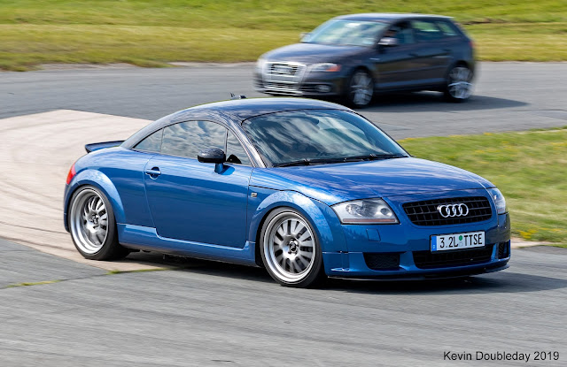
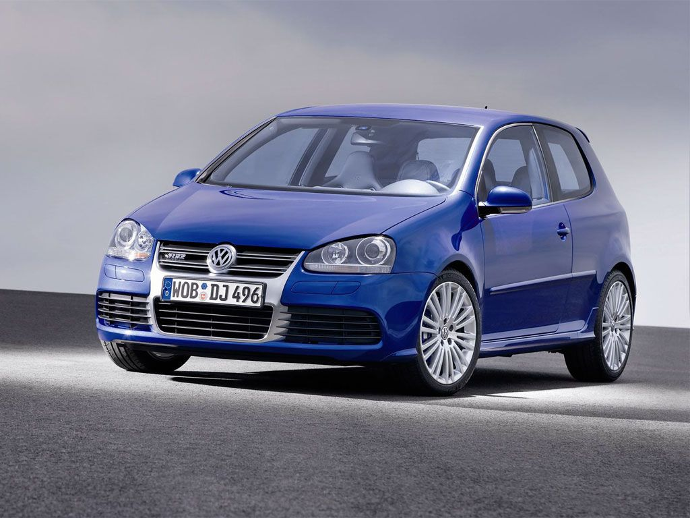

Bio AUDI TT 3.2
It was in 1995 that the world first set eyes on the initial concept car for the Mk1 Audi TT. The covers lifted on the Coupe concept at the Frankfurt Motor Show of that year, but it wouldn't be long until a road-going production car became the dream of many sports car enthusiasts,Bidding to give the car the best chances at becoming a legendary sports car, Audi decided to release a brand new range-topping model in 2003. Its name was the 3.2 V6 Quattro, and as the name suggests, its engine bay was rather full of a massive 3.2-liter V6. A lot of development would go into this model with the aim of ensuring the TT's performance credentials, but did it work? Here's all you need to know about the Mk1 Audi TT 3.2 V6 Quattro.
Engine stats,250 Hp @ 6300 rpm. 320 Nm @ 2800-3200 rpm. 236.02 lb.-ft. @ 2800-3200 rpm
Manufacturer Audi AG
Production 1999-2021

Bio Golf 5 R32
After the IV R32 set the tone for where the brand was going, Volkswagen launched the Golf V R32 in 2005 which became the most powerful and fastest production Golf at the time. The Volkswagen Golf V R32 is based on the standard Golf, meaning its design and dimensions are near identical. However, its new nose design and lowered suspension mean there are small differences such as a 20 mm height reduction and length increase of 42 mm. The next second edition R32 followed the successful formula laid down by the previous R32 and in doing so, established itself at the top of the Golf range, above the already highly acclaimed GTI.
Engine stats,250 Hp @ 6300 rpm. 320 Nm @ 2800-3200 rpm. 236.02 lb.-ft. @ 2800-3200 rpm
Manufacturer Volkswagen AG
Production 2005

Bio Porsche GT3 RS
The Porsche 911 GT3 RS was launched in May 2023. The GT3 RS is part of the 911 lineup and is known for its thrilling performance and precision. The first GT3 model was introduced in 1999, marking the beginning of a road-ready racecar.
Engine and Performance
Engine: 4.0-liter naturally aspirated flat-six
Power: 518 horsepower
Torque: 465 Nm
Transmission: 7-speed dual-clutch automatic
0-100 km/h: 3.2 seconds
Performance:4.0-liter naturally aspirated flat-six engine producing 518 horsepower and 465 Nm of torque
{kind=link}
{kind=link}